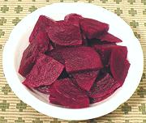

|
Pickled BeetsFinland - Etikkapunajuuret | ||||
| Makes: Effort: Sched: DoAhead: |
8 app * 2 days Must |
This is reported (by a Finn) to be the most popular pickle in Finland. It's certainly one of my favorites - and easy to make too. The recipe says to mature for a couple of days but I usually start eating them within a few hours. | |||
|
2 ----- 2 1/4 1 3 ----- |
# --- c c T T --- |
Beets -- Pickle Vinegar (1) Sugar Cloves, whole Peppercorns ---------- |
Make: - (2 days - 40 min work)
|